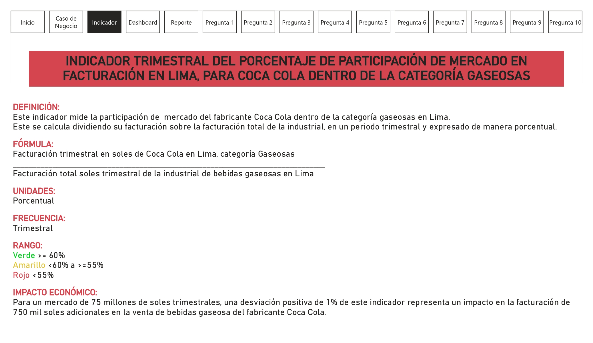
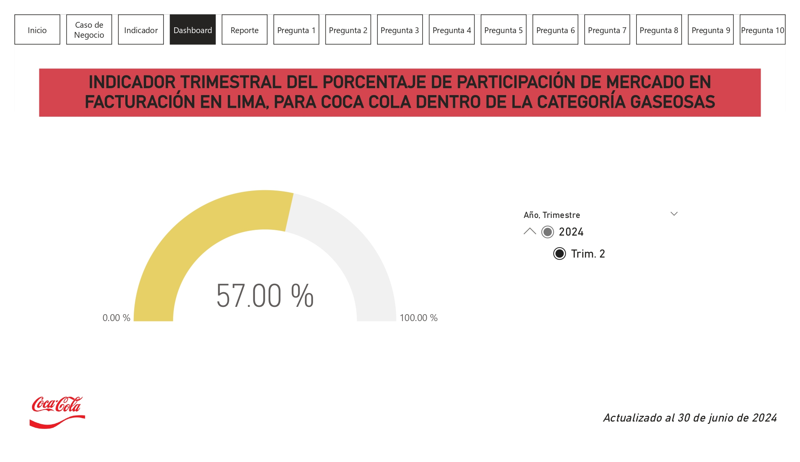

Reporte
Luego de haber analizado la situación actual, se presenta la proyección de la implementación de la estrategia y su impacto económico en la empresa.

Este proyecto final forma parte del curso de Data Visualization with Power BI + Cloud del Diplomado Data Visualization and Dashboarding 2024 - 01 de la PUCP
Se inició definiendo como caso de negocio el indicador: "INDICADOR TRIMESTRAL DEL PORCENTAJE DE PARTICIPACIÓN DE MERCADO EN FACTURACION EN LIMA, PARA COCA COLA DENTRO DE LA CATEGORÍA GASEOSAS" para el cual se desarrolló una app en PowerBi que apoye en la toma de decisiones. Para poder realizar esto se realizó un modelado de datos
Al 30 de Junio de 2024, el INDICADOR TRIMESTRAL DEL PORCENTAJE DE PARTICIPACIÓN DE MERCADO EN LIMA, PARA COCA COLA DENTRO DE LA CATEGORÍA GASEOSAS tiene un valor de 57% (semaforo amarillo). Para el 30 de Septiembre de 2024, se desea incrementar el valor de este indicador hasta llegar a un valor de 60.0% (semaforo verde).
"Para lograr este objetivo, se plantea ofrecer un programa de beneficios a un grupo de clientes clave del canal tradicional, estos serán seleccionados a través de criterios clave como: ubicación estratégica, zonas de influencia, tamaño, tipología, etc. El plan abordará fortalecer la presencia del portafolio a través del top 20 de productos, así como generar fidelización con dichos clientes a través de 3 beneficios: descuentos/precios especiales, bonificaciones y línea de crédito. También se incluirá beneficios adicionales como: pintado de fachada, material pop, ejecutivos de venta especiales."
El monto a invertir de esta estrategia es de 1 millón de soles trimestral. Se estima que al cumplir este objetivo en la fecha propuesta, la facturación adicional trimestral será de 2.25 millones, lo cual sumaría 11.25 millones de facturación adicional en un año de operación.
A continuación se define el indicador ya mencionado anteriormente en base al cual trabajaremos todo nuestro caso de negocio. Asimismo se presentan los siguientes puntos: Fórmula, Unidades, Frecuencia, Rango, Impacto Económico.
En el dashboard actualizado al 30 de junio de 2024 (Trimestre II) se presenta el indicador en un 57% (rango amarillo), indicando así que nos encontramos a 3% del objetivo (rango verde).
Luego de haber analizado la situación actual, se presenta la proyección de la implementación de la estrategia y su impacto económico en la empresa.
En base a la data de nuestro modelo de negocio se plantean 10 preguntas directamente relacionadas con el indicador que definimos previamente.
Julio Acosta - jj_5445@hotmail.com
André Anhuamán - andreanhuaman2010@gmail.com
Fernando Lanza - flanzach@hotmail.com - GitHub: FLanza0
Thania Oropeza - thaniaoro@gmail.com
Ana Paola Vásquez - anapaolav96@gmail.com - GitHub: AnaPaolaVasquez